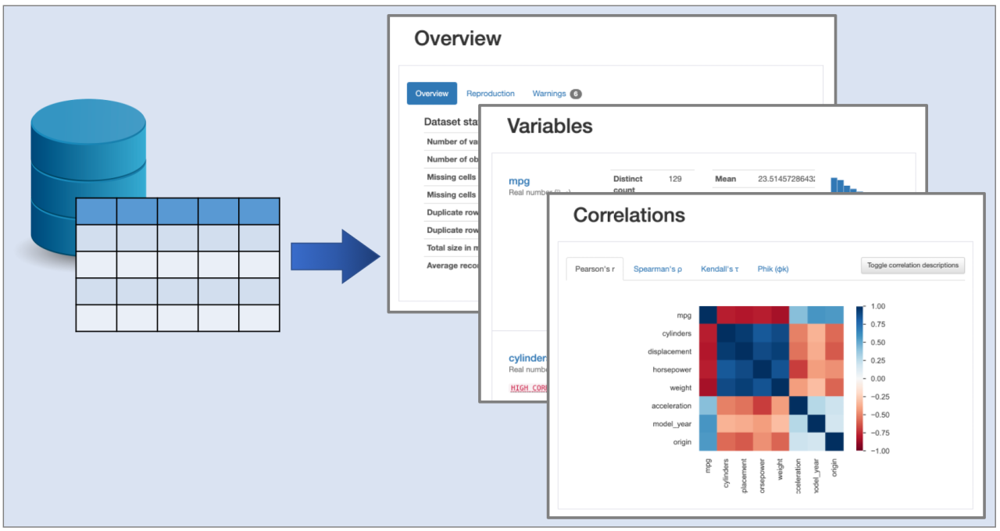
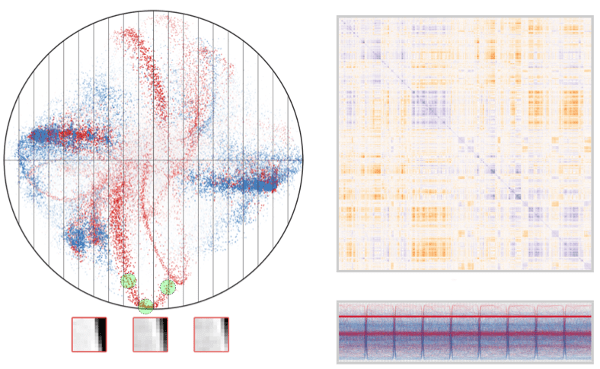

Chapter 3 Data Science (ML and Big Data tools)
This page collects ML methods. Focus is given to material that have an applied focus rather than a theoretical one. For more theoretical materials, go to the Basic Mathematics section.
3.1 Data Exploration
- Pandas Profiling. A Python Library that automatizes the production of summary statistics from pandas data frames, similar to the summary() function in R, but with more output. Good for data exploration before running further analysis. Source code available here. Further examples here.

3.2 Clustering Methods
- Cluster Analysis in R: Practical Guide. A compilation of clustering methods in R including some of the conceptual background that underpin them.
3.3 Correlation Methods
At surface level, determining the correlation between data points is a simple procedure, yet it’s still a great part of performing analyses on big data sets. That being said, calculating and visualizing the correlations in large multidimensional data sets is not trivial. For this reason, I decided to create a separate section with techniques to calculate correlations.
An Alternative to the Correlation Coefficient That Works For Numeric and Categorical Variables.
s-Corrplot. The s-CorrPlot is a scatterplot for visually exploring pairwise correlation coefficients between multiple variables in large datasets.

- Running Correlations in R. A chapter on correlation from the Advanced Regression Methods course from the University of Alabama already mentioned in the Statistics and Experimental Design section. It covers “classical” correlation methods like Pearson’s and Spearman’s correlations, and more niche methods like Point Biserial Correlation, Phi Correlation, Partial and Semipartial Correlation.